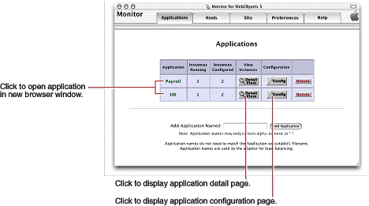
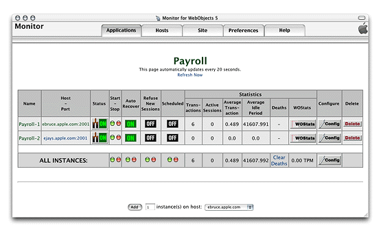
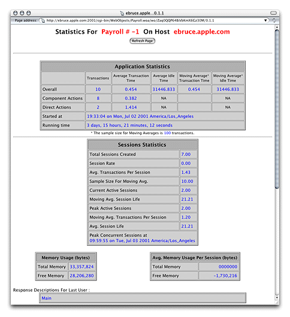
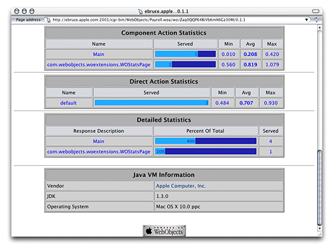

| PATH |

There are several ways to obtain information about the applications deployed on your site. You can
Monitor's Applications page gives you an overall view of a site. Figure 7-1 illustrates the kind of information you can access through the Applications page:
Figure 7-1 The Applications page
From this page, you can perform several tasks:
Figure 7-2 depicts the application detail page.
Figure 7-2 The application detail page
The application's name is displayed centered and in bold
letters. When there are active instances, it is a link to the application
through the HTTP adaptor; the request is load balanced among the
application hosts configured in the adaptor. (For this to work,
the HTTP adaptor URL property must be set; see "Configuring Sites" for details.)
If no value has been entered for the property, the default URL (http://localhost/cgi-bin/WebObjects/)
is used instead.) The URL used to connect to the application looks
similar to the following:
http://localhost/cgi-bin/WebObjects/Payroll
The following list describes the performance-related information shown on the application detail page in the Statistics column group:
Before you can view the instance statistics page, you have to enter the password you set on the instance configuration page. See "Setting a Password for the Instance Statistics Page" for details.
The row with the caption ALL INSTANCES contains application-wide performance information, including the average number of transactions processed per minute (TPM).
You can access the instance statistics (WOStats) page of an instance through Monitor or directly through a Web browser.
To use Monitor, go to the application detail page and click WOStats for the instance whose statistics you want to view.
To use your Web browser, access the following URL:
http://myhost/cgi-bin/WebObjects/MyApp.woa/wa/WOStats
If there are multiple instances, specify the instance number as well:
http://myhost/cgi-bin/WebObjects/MyApp.woa/1/wa/WOStats
Figure 7-3 and Figure 7-4 show the information the instance statistics page provides.
Figure 7-3 The instance statistics page—part 1 of 2
Figure 7-4 The instance statistics page—part 2 of 2
WebObjects applications can record information in a log file that can be analyzed by a Common Log File Format (CLFF) standard analysis tool. Applications do not maintain this log file by default; log-file recording must be enabled through an application's code. When enabled, the application records a list of components accessed during each session. By default, only component names are recorded, but you may add more information.
To enable adaptor logging, you create a file called logWebObjects in
the temporary directory of the computer where the HTTP server runs.
When logging is enabled, the adaptor logs its activity in a file
called WebObjects.log in
the temporary directory. Logging adaptor activity significantly
decreases performance. Use this feature only as a troubleshooting
aid; do not use it during regular deployment.
The location of the temporary directory depends on the platform:
/tmpTEMP environment
variable.On UNIX-based platforms, do the following to create the logWebObjects file
(you must have root privileges):
touch logWebObjects
On Windows 2000, create a blank file using a text editor and
save it as logWebObjects in
the temporary directory.
You can use the tail (UNIX)
or type (Windows 2000)
commands to display the adaptor log file in your console.
On UNIX-based systems, use the following:
tail -f WebObjects.log
On Windows 2000, type the following in a DOS prompt:
type WebObjects.log
You can analyze the information in the log to find out such things as which applications are being requested, which applications are being auto-started, and what the HTTP headers of the requests are. You can also use the log to verify that the HTTP adaptor is properly configured for load balancing.
The following excerpt includes an error message that indicates that an instance of Payroll wasn't running when a request for it came in:
Info: <WebObjects Apache Module> new request: /cgi-bin/WebObjects/Payroll Debug: App Name: Payroll (7) Info: Specific instance Payroll: not found. Reloading config.
After Payroll is started, the same request produces the following log-file entries:
Info: New response: HTTP/1.0 200 Apple WebObjects Info: ac_newInstance(): added Payroll:2 (2001) Info: V4 URL: /cgi-bin/WebObjects/Payroll Info: loadaverage: selected instance at index 4 Info: Selected new app instance at index 4 Debug: Composed URL to '/cgi-bin/WebObjects/Payroll.woa/1' Info: New request is GET /cgi-bin/WebObjects/Payroll.woa/1 HTTP/1.0 Info: Sending request to instance number 1, port 2001 Info: Trying to contact Payroll:1 on (2001) Info: attempting to connect to ebruce.apple.com on port 2001 Info: Created new pooled connection [1] to ebruce.apple.com:2001 Info: Using pooled connection to ebruce.apple.com:2001 Info: Payroll:1 on (2001) connected [pooled: Yes] Info: Request GET /cgi-bin/WebObjects/Payroll.woa/1 HTTP/1.0 sent, awaiting response Debug: ac_readConfiguration(): skipped reading config Info: New response: HTTP/1.0 200 Apple WebObjects Info: Payroll 1 load avg = 1 Info: received ->200 Apple